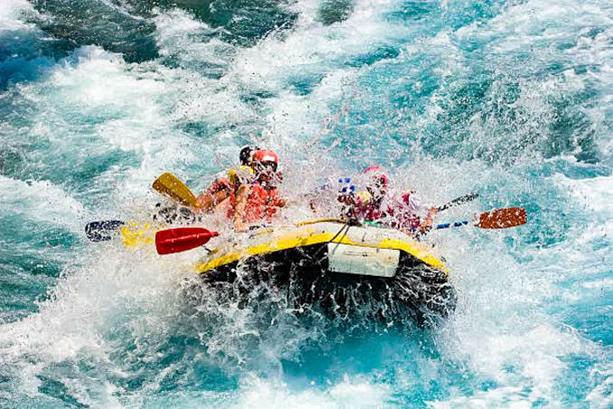
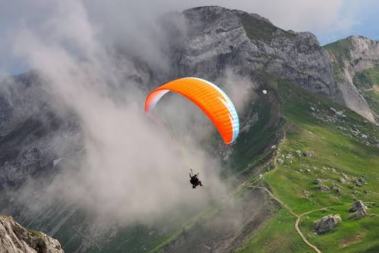
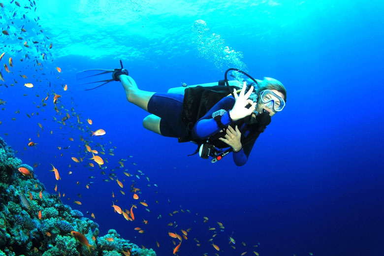
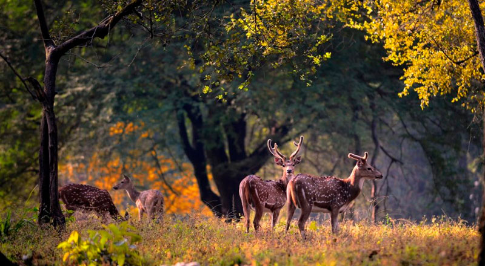
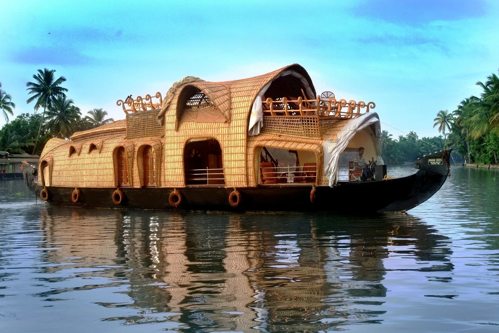
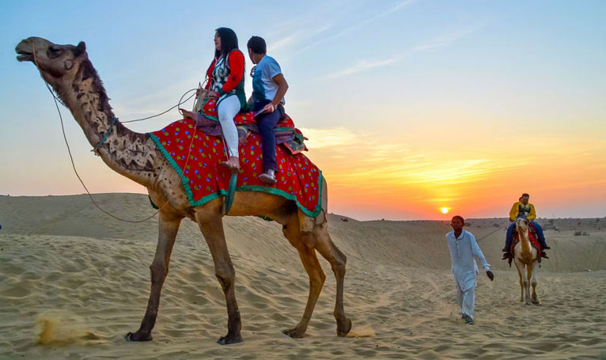

| 🪷Discover the Souls of India | Home | Destinations | Experiences | Culture | About | Contact |
|---|

Experience the thrill of river rafting in the beautiful waters of Rishikesh. It is one of India's most popular adventure activities.
Location: Rishikesh, Uttarakhand
Best Time: September to June

Enjoy the excitement of flying high above beautiful mountains and valleys. Bir Billing is one of India's most famous paragliding destinations.
Location: Himachal Pradesh
Best Time: October to June

Explore the beautiful underwater world filled with colourful fish, coral reefs and amazing marine life.
Location: Andaman and Nicobar Islands
Best Time: October to May

Discover the beauty of wildlife and forests. Enjoy an exciting safari and get a chance to see tigers, elephants and other animals.
Location: Uttarakhand
Best Time: November to June

Enjoy a peaceful journey through beautiful backwaters surrounded by coconut trees and green landscapes.
Location: Alleppey, Kerala
Best Time: September to March

Experience the beauty of the Thar Desert with an exciting camel ride across golden sand dunes and enjoy the traditional culture of Rajasthan.
Location: Jaisalmer, Rajasthan
Best Time: October to March